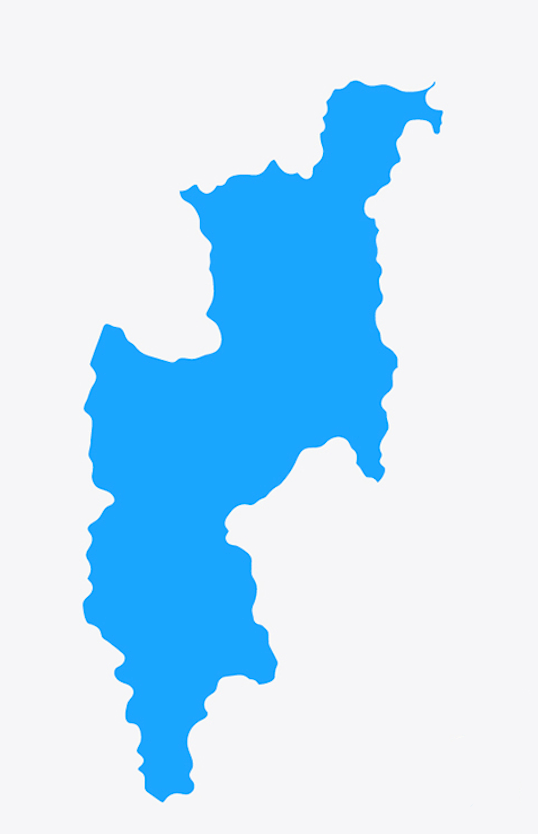
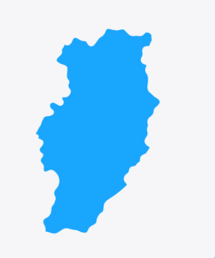
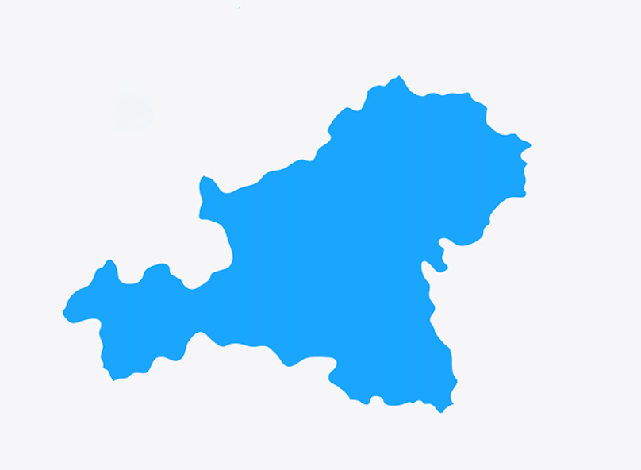
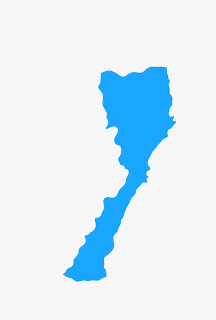
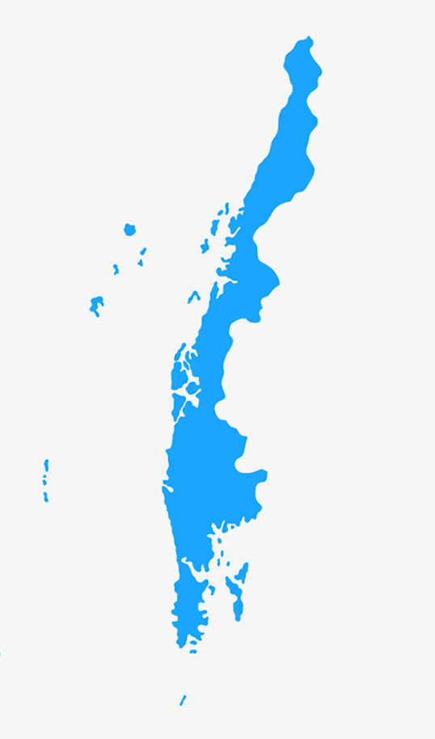

-
NORTHERN THAILAND

Chiangrai Province
Chiangmai Province

Lampang Province

Maehongson Province

Phare Province
Nan Province
NORTHEAST THAILAND

Buriram Province
Nakhonratchasima Province

Chaiyaphum Province
Khonkaen Province

Udonthani Province

Ubonratchathani Province
WESTERN AND CENTRAL THAILAND

Bangkok Province
Samutsongkhram Province

Kanchanaburi Province
Nakhonpathom Province
Ratchaburi Province

Suphanburi Province
-
EASTERN THAILAND

Chachoengsoa Province
Chanthaburi Province
Chonburi Province
Rayoung Province
Sakaeo Province
Trat Province
-
SOUTHERN THAILAND

Chumphon Province
Nakhonsithammarat Province
Narathiwat Province
Prachuakhirikhan Province
Ranong Phangnga Phuket Province

Yala Province